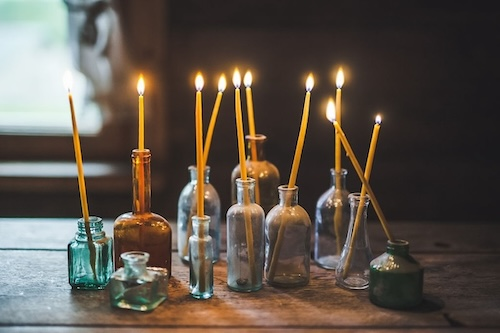
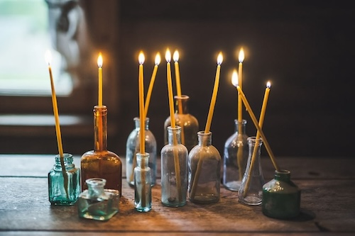

Idea of simplicity and upcycling.
 Settled in the Lithuanian countryside I share the idea of simplicity, reconnecting with nature, slowing down and focusing on myself and surroundings. I follow a zero waste lifestyle to live in harmony with nature, minimizing my footprint for future generations. I specialize in quality items that are simple, useful, recyclable or compostable, made to become a part of your home. The journey starts with the material - ceramic trinket, empty jar, yarn from the thrift shop, excess textiles - it whispers an idea and is transformed into natural soy candles, crochet storage baskets, decorative bowls - a one of a kind accessory. Processing time can stretch up to 3-4 days, as I do not travel to town daily. Please, re-use mailing bags, recycle or compost cardboard packaging. I do not send paper invoices, they are available upon request and I am more than happy to email them!
Sending a little piece of our lives to Your home with every item.
 Settled in the Lithuanian countryside I share the idea of simplicity, reconnecting with nature, slowing down and focusing on myself and surroundings. I follow a zero waste lifestyle to live in harmony with nature, minimizing my footprint for future generations. I specialize in quality items that are simple, useful, recyclable or compostable, made to become a part of your home. The journey starts with the material - ceramic trinket, empty jar, yarn from the thrift shop, excess textiles - it whispers an idea and is transformed into natural soy candles, crochet storage baskets, decorative bowls - a one of a kind accessory. Processing time can stretch up to 3-4 days, as I do not travel to town daily. Please, re-use mailing bags, recycle or compost cardboard packaging. I do not send paper invoices, they are available upon request and I am more than happy to email them!
Sending a little piece of our lives to Your home with every item.

I believe that You can have original, useful, eco - friendly and guilt free things, that do not require new materials or resources, are 100% reclaimed, natural and biodegradable or recyclable.
Handmade gifts, interior accessories, hand-knitted slippers, and natural organic candles. Leftover fabrics, reclaimed yarn, unwanted knits, glass jars or ceramic containers are saved and transformed into new items. Compostable or recyclable, made with care and the environment in mind. Made on the homestead living by zero waste ideas.I specialize in quality items that
are simple, useful, recyclable or compostable, made to become a part
of your home. The journey starts with the material - ceramic trinket,
empty jar, yarn from the thrift shop, excess textiles - it whispers an
idea and is transformed into natural soy candles, crochet storage
baskets, decorative bowls - a one of a kind accessory.
Handmade gifts, interior accessories, hand-knitted slippers, and natural organic candles. Leftover fabrics, reclaimed yarn, unwanted knits, glass jars or ceramic containers are saved and transformed into new items. Compostable or recyclable, made with care and the environment in mind. Made on the homestead living by zero waste ideas.I specialize in quality items that
are simple, useful, recyclable or compostable, made to become a part
of your home. The journey starts with the material - ceramic trinket,
empty jar, yarn from the thrift shop, excess textiles - it whispers an
idea and is transformed into natural soy candles, crochet storage
baskets, decorative bowls - a one of a kind accessory.
For our daily adventures and struggles follow us on Instagram Troboje